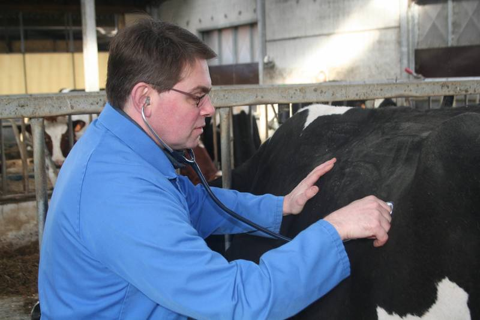

01
Inwendige ziekten
Ook bij landbouwdieren blijft het individuele dier centraal. Via grondig klinisch onderzoek, eventueel aangevuld met bloed-, mestonderzoek of echografie, stellen we een correcte diagnose en vergroten we de kans op herstel.